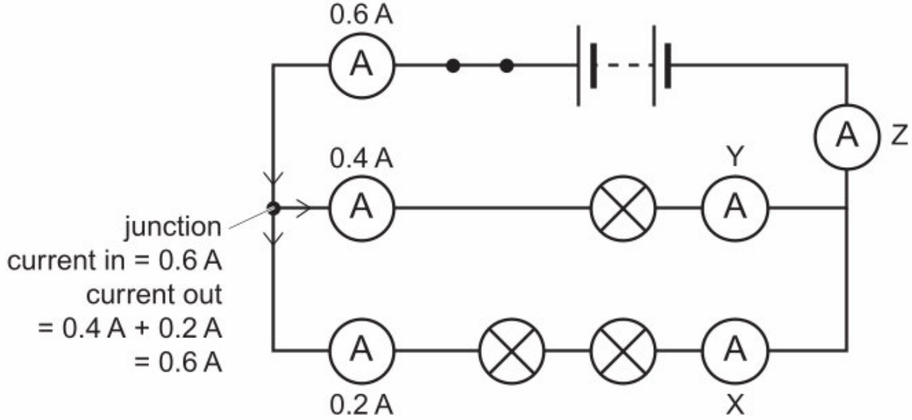
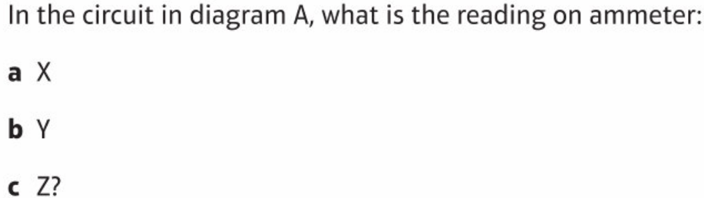
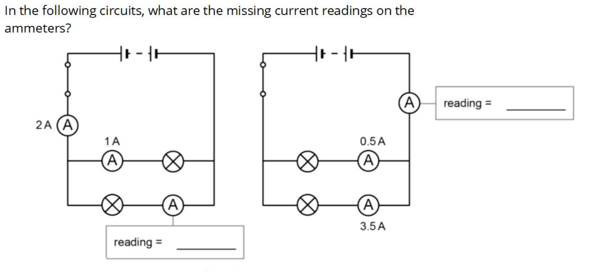
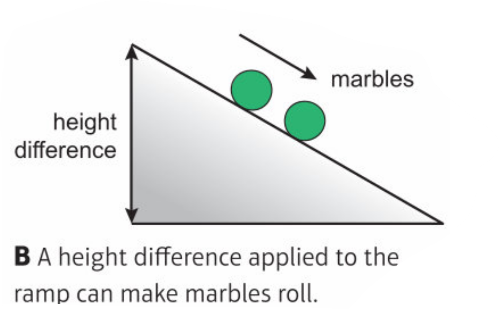
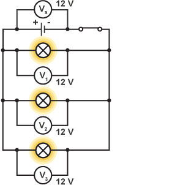
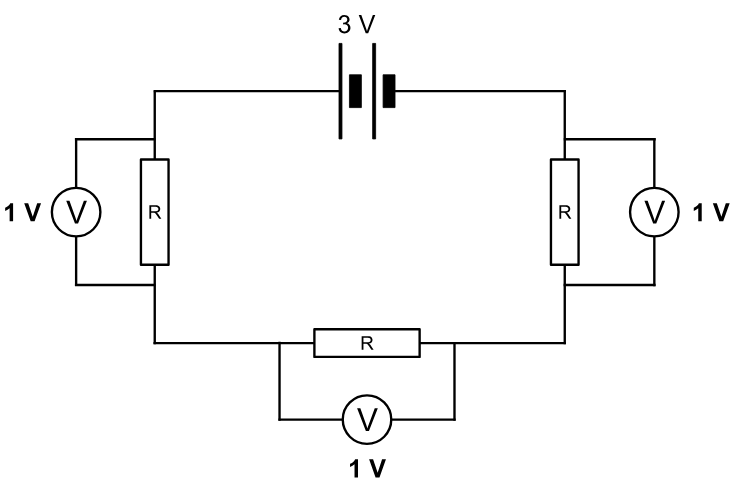
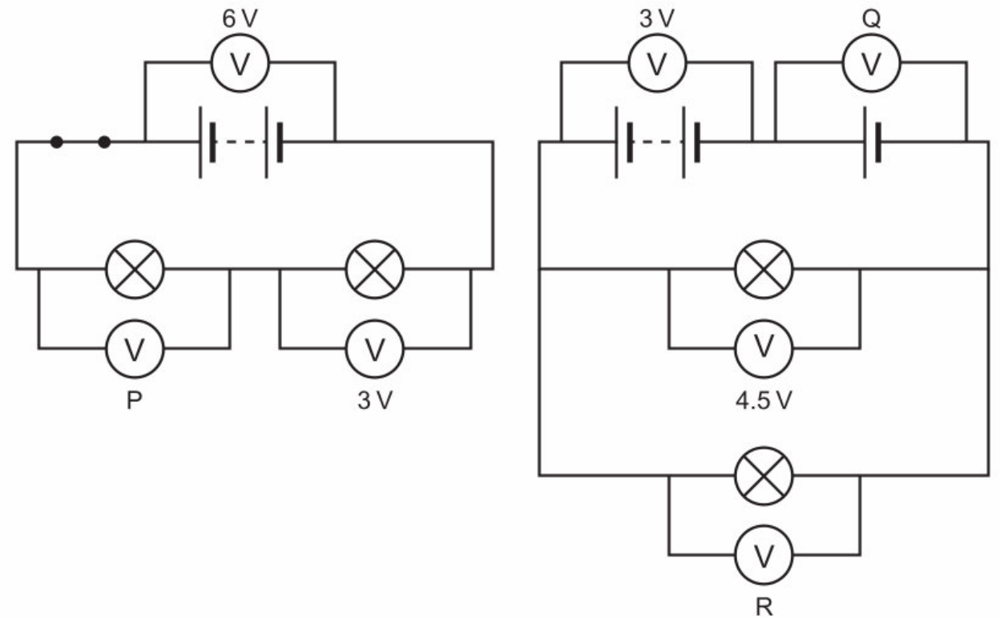
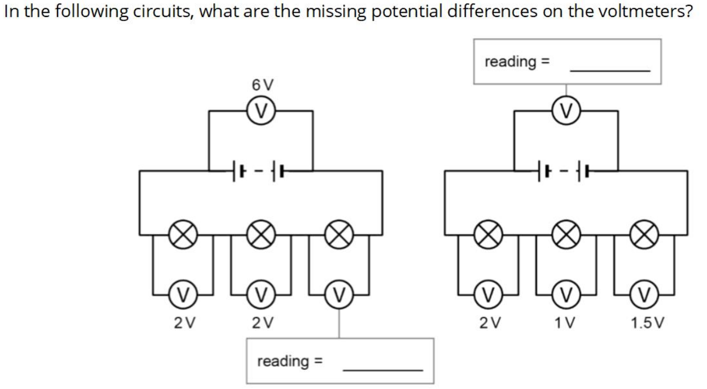
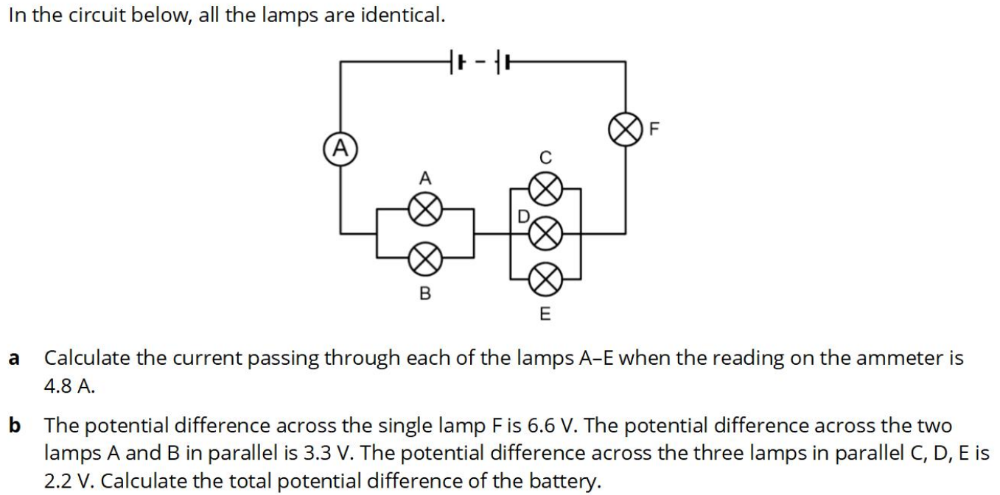
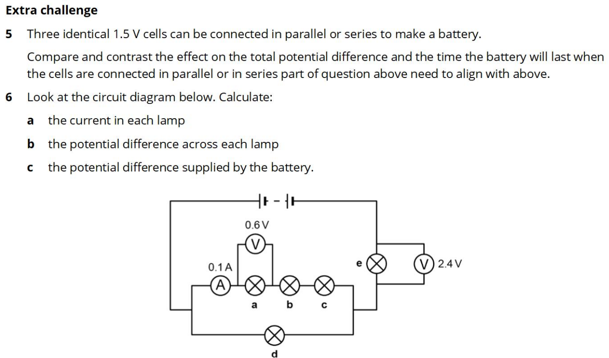

What word describes materials that electricity will pass through?
conductors
In an electric circuit with a battery, which of these materials will conduct: copper, wood, salty water?
copper and salty water
What component is used to measure current?
ammeter
What name is given to the negatively charged subatomic particles that cause an electric current?
electrons








When 2 lamps are connected in parallel, the p.d. across each lamp is the same as / bigger than / smaller than for one lamp on its own.
the same as
The current through each lamp in parallel is the same as / half / twice the total current.
half
When two identical lamps are connected in series, the p.d. across each lamp is the same as / half / twice the total potential difference
half
The current through each lamp in series is half / twice / the same as the current for one lamp on its own.
the same as

